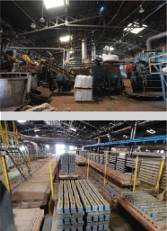

생산지와 입지＋
Q처음에 파주에서 창업하셨다가 1997년도쯤에 홍성으로 옮기셨다. 어떤 이유 때문인지?
A80년대만 하더라도 서울 근방은 (공장을) 만들기 굉장히 어렵고. 왜냐하면 땅이 있어야 한 다. 그리고 우리는 가마에서 불을 때야 한다. 그러니까 그때만 하더라도 연기 나고 이러는 것 들이 (서울 근처에서는) 만만치 않았다. 그러다 보니까 경기도에 나름대로는 (공장을 설립했 다). 그 당시에 파주 쪽에 했던 이유는 서울권인데 그나마 상대적으로 시비가 적은 동네. 왜냐 하면 그쪽이 통일로 타고 가는 길이다. 옛날로 보면 사람들이 많이 사는 동네가 아니었다. 그 리고 군부대에서 벽돌을 많이 쓴다. 80년대 이후부터 병영 현대화 작업으로 인해 막사 등 군 부대 시설물들을 RC 구조로 짓고 벽돌로 마감했다.
Q홍성에 어떤 연고가 있으셔서 옮기신 건가.
A여기 주변이 충남에서는 그나마 구하기가 쉽고. 아까 얘기했던 대로 원료 따라 왔다고 보 면 더 맞을 것 같다.
A원료를 채취해서 운송을 하려면 그 비용이 사실 많이 든다. 그렇기 때문에 가급적이면 원 료를 많이 쉽게 구할 수 있는 지역에 공장을 많이 짓는다. 벽돌 회사들이 연천에 두 개가 있 었다. 경기도 연천. 근데 작년에 하나가 없어졌다. 그 다음에 이화산업이 여주에 있고. 우성이 평택에 있고. 그 다음에 충청도에는 지금 저 앞에 저 회사랑 우리밖에 없다. 두 개밖에. 충북 에는 작년 초에 있었는데 없어졌고. 전라북도도 김제에 세 개, 익산에 두 개가 있다. 나머지는 없다.
Q수변과의 관계는 어떠한지? 산업용수 조달의 편의성도 입지 선정에 영향을 주었나
A물을 대량으로 끌어와야 되는 상황은 아니다.
Q강 하류의 경우 점토 수급에 용이하다는 이점도 있는지? 강 하류 쪽은 옛날에는 많았다. (하류에 쌓인 흙을) 강변 점토라고 얘기를 하는데, 질이 되게 좋다. 그런데 지금은 그걸 할 수가 없다. 한강 쪽은 옛날에 이화산업같은 업체들이 강변 점토 를 많이 채취해서 사용했다.
Q공급망은 ‘집장수’들에게 직접 가는 방식이었을지.
A지역의 건재상들이 있다. 동마다 다. 그 근처에 있는 벽돌상들이 또 있다. 지금도 각 시군 구 정도 되면 벽돌 장사들이 있다. 벽돌만 파는 곳이나 건재상에 납품도 하고, 아니면 시공사 에 직접 공급도 하고. 벽돌 대리점이 지금도 한 300개 정도 있다. 공장에서 그런 대리점에 물 건을 넘기고, 대리점들이 가까운 데 먼 데가 됐든 보통 회사를 대여섯 군데 이상 거래를 한 다. 회사마다 조금씩 색상도 다르고 그러니까.
탄생과 변용＋
Q8·90년대 다세대 주택의 외장재로 벽돌이, 특히 적벽돌이 외장재로 쓰였는데 그 이유는 무 엇이라 생각하시는지.
A(국내에서는) 기본적으로 RC조를 쓴다. 그 당시 우리나라에서 생산될 수 있는 자재 중에서 RC조의 외장재로 쓸 만한 게 (마땅히) 없다. 그래서 대부분은 나름대로는 벽돌을 많이 썼다.
Q벽돌 산업이 가장 부흥했던 시기가 그러면 90년대 정도라고 생각하시는지?
A90년대 초. 모든 대한민국의 산업은 다 그때가 가장 전성기였다. 95년도 정도까지. IMF가 터진 게 97년도다. 엄밀하게 한보제철이 아마 96년도인가 무너졌을 거다. 그 이전까지는 나름 대로 모든 곳들이 항상 잘 됐다.
Q주택공사의 주택 200만 호 공급이 (다세대주택이) 급증하는 계기가 됐다고 했는데, 그런 정책의 효과가 벽돌업체 측에서 출하량 등으로 체감되었는지
A그렇다. 많이 늘어났고. 그 당시에는 솔직히 아침에 꺼내도 오후에는 품절이었다. 주택 200만 호 공급하다 보니 상당수가 1기 신도시였다. 일반적으로는 아파트로 점점 넘어갔다. 대 량으로 하려다 보니까 어쩔 수 없이 아파트가 더 분위기에 맞게 됐고, 그런데 아파트는 벽돌 을 안 쓰니까 이제 벽돌산업이 좀 줄었다.
Q동아시아 3국 중 한국에서 벽돌이 가장 보편화된 이유는 무엇이라 보는지.
A세 나라가 다 도시화가 동시에 이루어진 것은 맞다. 그런데 당시에 우리가 쉽게 구할 수 있는 게, 우리는 콘크리트를 쉽게 만들어낸다. 시멘트를. 철근은 포스코에서 뽑아내고 있고. 그러다 보니까 RC 구조를 되게 우리는 경쟁력 있게 만들어낼 수 있는 구조다.
Q결국 벽돌이 한국에서 잘 됐던 이유는 RC조와의 궁합이라는 요인이 있는 것 같다.
A그렇다. 무조건이다. 잘 맞는 거다.
출처: 제공 연구 원고 「텍스트_261028」 PART 2-3-A · PART 2-3-B. PDF 줄바꿈을 정리한 인터뷰 발췌.